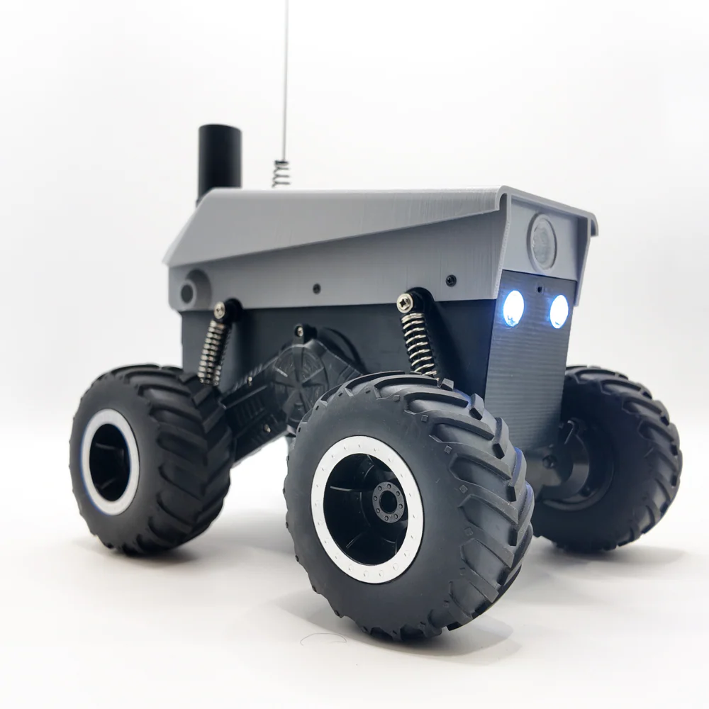

Projects
Earthrover Mini+ Open Source Project
STM32 | Software | Code | Field
The Earthrover project required us to take the low-level C code
made for the Earthrover Mini+ robot and deliver an addition to the LeRobot
library that is compatible with its commands such as `lerobot-teleoperate`
or `lerobot-record`.
We first had to review code that launched the threads on the STM32 for wireless and wired communication, motor control, the IMU, and more.
Formatted control packet structure to send and recieve messages by calling our python api that was built on top of the underlying C code.

F1 WDC Tracker
Linux/Windows | Socket Programming, OpenSSL | C, Python | Shared Libraries, Foreign Function Interface
Context: Formula 1 is a racing series that features 20 Drivers racing around different tracks in different parts of the world. After each race, a driver gets a certain amount of points based on position, incurred penalties, and more. At the end of the year, the driver with the most points becomes the World Champion. This championship for the drivers is called the World Drivers' Championship (WDC)
The goal of my project is to code a program that communicates with an API over the network to receive data on how the WDC is going. This data will include the drivers, their names, and the points they have at the point of program execution.
After getting this data, the program will run ElectronJS to create a window, and display this data in an organized matter. This output will show the drivers in order of how they're doing in the championship, their points, and when the next race starts.
This program will start as the user startsup their device, this is mostly to add a layer of complexity so that I can learn as much as I can while working on this project.
Seeed Studio x NVIDIA Hackathon — 1st Place Winners
SO-101 Arms | LeRobot Platform/home-made API | Python | Robotics
Our team from SIGRobotics took 1st place at the Seeed Studio x NVIDIA Hackathon by building a bi-manual matcha-making robot powered by two SO-101 arms.
Technical Implementation: We fine-tuned and ran inference on NVIDIA's GR00T-N1.5, a foundational model built for generalizable humanoid manipulation. Because the stock LeRobot data collection script for SO-101 only supported a single leader-follower pair, we modified the script to handle inputs across two leader and two follower arms simultaneously. Leveraging GR00T's multimodal capabilities, we trained the setup for complex manipulation tasks like moving cups, pouring, and stirring.
Overcoming Hardware Failure: When our left wrist camera broke on the final day, it invalidated a significant portion of our dual-camera training data. With under an hour until judging, we pivoted quickly—scrapping faulty episodes and manually re-collecting over 100 fresh episodes to retrain our model just in time.
F1Tenth
Sensor integration | ROS 2 | Python, C++ | Robotics
F1Tenth is a research-focused competition that runs in most robotics-related conferences.
Teams have a 1:10 size RC car that's modded out with Lidar and many other sensors, with the
goal of creating an autonomous vehicle that can race around custom tracks and beat their opponents.
F1Tenth has many cool aspects but the main focus is on its 3 main parts.
Perception, Planning, and Control. As Co-Lead of the UIUC F1Tenth team, I was looking over, and
most importantly learning alongside, groups focused in each of the mentioned aspects of our autonomous vehicle.
Our perception groups are focused on gathering sensor data and publishing data from their ROS2 (Humble)
nodes in order to let the other groups know where we are in the global map.
Our planning group is focused on learning and implementing local planning algorithms that help us decide
what the best path of movement would be, and how to maneuver around the track. They compare the local map
and the global map to see what the optimal move is, and send messages to the nodes controlling the motors on
where to move next.
The control group focused on taking those input commands and
Autosampler Project
Siemens S7-1500 | TIA Portal | Ladder Logic (LAD) & SCL | Industrial Automation
Designed, programmed, and documented a multi-axis automated liquid sampling system built on a Siemens S7 PLC architecture using TIA Portal. Engineered robust real-time motor positioning, dosing control, and system safety mechanisms to execute precise, unattended sample collection cycles.
Embedded Control & State Logic:
- Engineered a deterministic finite state machine (FSM) to coordinate sample intake, volumetric pumping, multi-vial rack index positioning, and automated purge/rinse cycles.
- Implemented closed-loop motor control logic for precise XYZ/indexing positioning and variable-rate peristaltic/syringe pumping operations.
- Built hardware fault-handling mechanisms including software watchdog timers, over-current/stall detection, limit-switch bounds checking, and liquid-level sensing.
System Architecture & Documentation:
- Authored comprehensive technical documentation, including sequence of operations (SoO) manuals, timing diagrams, IO mapping spreadsheets, and detailed logic flowcharts to streamline debugging and future hardware iteration.
- Structured modular Function Blocks (FBs) and Data Blocks (DBs) in TIA Portal to ensure scalable memory allocation and clean separation between low-level driver logic and high-level sequence control.
Android Automative OS | Flutter | Python | Documentation and Prototyping
I'm the team lead for a collaborative project between HERE Technologies x SIGRobotics at UIUC. We're currently laying down the architecture and project plans in order to present an official proposal in order to have a team work on the project over the summer.This project has heavy focus on Flutter development for the Android Automative Operating System. Also I think this project is very unique compared to what I usually go for since it forces me to slow down and think as a developer for the entire project timeline. What do I want to achieve? How do I want it to look like? Many times we students forget to plan ahead for these things and try to figure it out as we go, leading to taking too much unnecessary time on specific parts, while straying a little from the goal of our projects.
Deliverables we made/are making for the project:
- Initial Concept Specification Doc.
- Architecture Document
- Technical Specification
- Integration Plan